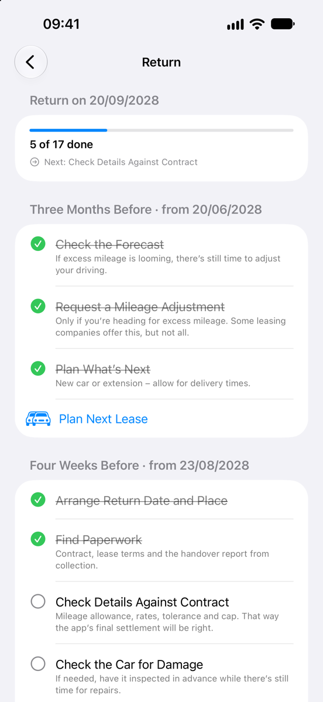

Kilometerkompass
KilometerkompassReturning Your Lease Car: How to Hand It Back Without Surprises
At the end of a personal contract hire (PCH) agreement – or a PCP you’re not keeping – the car goes back, and two things decide whether a final invoice follows: your mileage and the car’s condition. Here’s how to prepare in the months before, what to have ready on collection day and how to check the bill afterwards.
Updated November 2026
What decides whether you pay anything at the end?
With PCH and PCP you agree a mileage allowance for the term, often stated as an annual mileage. When the car goes back, the distance you’ve driven is compared with that allowance. Anything above it is charged as excess mileage at the rate in your agreement. Not every agreement refunds unused mileage – check whether yours does.
The second part is condition. Normal wear for the car’s age and mileage is expected; damage beyond that can be charged. Many leasing companies assess this against the BVRLA Fair Wear and Tear Guide, the industry standard published by the British Vehicle Rental and Leasing Association. Others use their own return standard. Ask your leasing company which one applies to you and get a copy in good time.
What should I check in my agreement?
- Mileage allowance: the total for the term, or the annual mileage and the term. Your odometer reading at delivery is on the delivery paperwork.
- Excess mileage rate: the charge per excess mile, and whether it’s shown with or without VAT.
- Unused mileage and tolerance: whether unused mileage is refunded, at what rate and up to what cap, and whether there’s a tolerance within which nothing is charged.
- Return conditions: which wear and tear standard applies, what you need to hand back with the car and how the collection is arranged.
- End of contract: the date the agreement ends and what your options are before then.
What gets checked at collection?
At collection, the car’s condition and odometer reading are usually recorded in a collection report, often with photos. Some leasing companies base their charges on that report, others assess the car again later, for example at their own site. Ask which applies – if the car is inspected after it has left you, your own photos are your record of its condition on the day.
Typical points to look at beforehand:
- Bodywork: scratches, dents, scuffed bumpers and stone chips, including the roof and the lower edges.
- Alloy wheels: kerb damage and scuffs on the rims.
- Tyres: tread depth, and cuts or bulges in the sidewalls. Tyres must at least meet the legal requirements. If you’ve had tyres replaced, check whether your agreement says anything about the type or brand.
- Windscreen and glass: chips and cracks. A chip can often be repaired before it spreads; check whether your insurance includes windscreen cover.
- Interior: stains, tears, burns, smells and damage in the boot.
- Lights and mirrors: cracked lenses or mirror housings.
Whether a repair before the return is worthwhile depends on what it costs compared with what the leasing company would charge. Use a reputable repairer and keep the invoice: a repair that isn’t up to standard can be charged again.
What do I need to hand back?
Everything that came with the car – your delivery paperwork usually lists it. Typically that includes:
- both keys, or all keys supplied
- the locking wheel nut key
- the service book or service records
- the owner’s manual and owner’s pack
- charging cables for an electric or plug-in hybrid car
- the parcel shelf or load cover
- the sat nav SD card, if one was supplied
- anything else supplied, such as a tyre repair kit, floor mats or a second set of tyres
When should I start preparing?
On collection day there’s nothing more you can do about the mileage, and little time to fix damage. So it pays to start well before.
Three Months Before
Compare your odometer reading with the target to date and forecast where you’ll end up. There’s still time to react: plan long trips differently, or ask your leasing company whether you can adjust the mileage allowance. Some leasing companies offer this during the term – your monthly payment goes up, but that can work out cheaper than the excess mileage charge at the end. Not all of them do, and the terms vary.
If you’re well below your allowance, there’s no point in driving extra miles just to use them up: you pay for the fuel or electricity, and if your agreement refunds unused mileage, you lose part of that refund.
Now is also the time to decide what happens next:
- A new car: allow for delivery times. If you know how far you really drive each year, you can choose an allowance for your next lease that is neither too low nor too high.
- An extension: some leasing companies let you keep the car for longer. Ask in good time and get the terms in writing.
- With PCP: you can usually hand the car back, pay the optional final payment and keep it, or part-exchange it. If you keep or part-exchange the car, excess mileage and condition usually affect its value rather than leading to a charge from the finance company – check your agreement.
Four Weeks Before
- Arrange the return date and place: many leasing companies get in touch before the end of the contract to book the collection. If you haven’t heard anything, contact them yourself. Make sure someone can be there and the car is at the agreed address.
- Find your paperwork: the agreement, the terms and conditions, the delivery paperwork with the odometer reading at delivery, and the service records.
- Check the service history: the car should have been serviced according to the manufacturer’s schedule, with every service recorded – in the service book or in the manufacturer’s digital service record. If it’s old enough to need an MOT, make sure the MOT is valid. Missing services can lead to a charge.
- Check the car for damage: walk round it in daylight and go through it with the standard your leasing company uses. Some leasing companies offer an inspection before the return, which gives you time to have repairs done.
- Gather everything that came with the car: see what to hand back. Missing items are often charged.
In the Final Week
- Remove your belongings and fitted extras: dash cam, phone holder, child seats, anything in the boot and door pockets. Take fitted extras out carefully – holes or marks left behind can count as damage.
- Delete personal data: sat nav destinations and your home address, paired phones, and your account in the manufacturer’s app.
- Clean the car inside and out: damage is easier to assess on a clean car, and some leasing companies charge for cleaning if the car is very dirty.
- Keep your insurance: the car stays insured until it has actually been collected.
On Return Day
- Photograph the odometer with the date: ideally with the date visible in the picture, for example on the car’s display. Your phone also stores the date and time in the photo data.
- Photograph the car all round and inside: in good light, every panel, every wheel, the windscreen, the interior and the boot. A short video walking round the car works too.
- Check the collection report: make sure the odometer reading is right and that the damage noted matches what you see. If you disagree, say so and have it noted on the report. Only then sign it, and keep a copy.
- Hand over the keys and accessories: and check that the report records them.
After the Return
- Keep everything: photos, the collection report, the delivery paperwork and repair invoices, until the final invoice has been settled.
- Check the final invoice: excess mileage and any charges for damage or missing items usually come with a final invoice, often some weeks after collection. Compare it with the collection report, your photos and your own calculation, and query anything that doesn’t match in writing.
- Cancel or move your insurance: once the car has been collected.
- Remove the registration from your accounts: resident parking permits, parking apps, toll, congestion or clean air zone accounts, and the app of a home charger.
- With PCP: ask the finance company or dealer what you need to do about the registration document and vehicle tax.
How do I check the excess mileage charge?
You can work out the mileage part of the final invoice yourself. All you need is your agreement and the two odometer readings:
- Mileage allowance: does it match your agreement? Check whether the agreement states it per year or for the whole term.
- Distance driven: the reading at collection minus the reading at delivery.
- Excess mileage: distance driven minus the allowance.
- Tolerance: if your agreement has one, is it applied as a free margin taken off the excess, or as a threshold above which all excess mileage counts?
- Charge: excess mileage times the rate in your agreement, plus VAT if the agreement adds it. If the amount differs, ask in writing how it was worked out.
An example with round numbers: say your agreement allows 30,000 miles over 36 months and charges 10p per excess mile, with no tolerance.
| Item | Value |
|---|---|
| Odometer reading at collection | 32,520 miles |
| Odometer reading at delivery | −20 miles |
| Driven | 32,500 miles |
| Mileage allowance | 30,000 miles |
| Excess mileage | 2,500 miles |
| Excess mileage charge (2,500 miles × 10p) | £250.00 |
In this example, every 100 miles on the odometer reading makes a difference of £10 – so a typo on the collection report is worth catching. If your agreement refunds unused mileage, the same steps work the other way round, often at a lower rate and sometimes up to a cap. The figures are only an example; if your agreement is in kilometres or euros, the calculation is the same.
Checklist for returning your lease car
- Three months before: compare your odometer reading with the target and forecast it to the end of the contract.
- If you’re heading for excess mileage: adjust your driving or ask your leasing company about a mileage adjustment.
- Decide what’s next: new car, extension or, with PCP, hand back, pay the final payment or part-exchange.
- Four weeks before: arrange the collection date and place.
- Find the agreement, terms and delivery paperwork; check the service history and the MOT.
- Check the car for damage against your leasing company’s standard, and have repairs done if they’re worthwhile.
- Gather the keys, locking wheel nut key, service records, owner’s pack, charging cables and everything else supplied.
- In the final week: remove your belongings, delete personal data, clean the car.
- On return day: photograph the odometer with the date and the car all round and inside.
- Check the odometer reading and damage on the collection report, then sign and keep a copy.
- Afterwards: cancel or move your insurance, remove the registration from permits and accounts.
- Check the final invoice: allowance, readings, tolerance and rate. Query anything that doesn’t match in writing.
How Kilometerkompass helps
The iPhone app takes you through the return with a checklist dated from your end of contract: “Three Months Before”, “Four Weeks Before”, “In the Final Week”, “On Return Day” and “After the Return”, with items such as “Arrange Return Date and Place” and “Gather Accessories”, plus room for your own. Throughout the contract, its forecast shows whether you’re heading for an excess mileage charge and how much, using the rate and tolerance from your agreement. After the last day of the contract it shows the final settlement, to compare with the leasing company’s invoice. And with “Plan Next Lease”, it works out the mileage allowance that suits your driving and compares two offers. Without the app, the free Mileage Calculator works out in your browser where you stand.


This guide gives an overview and is not legal advice. Your agreement, its terms and conditions and the reports from delivery and collection are what count, and so does your leasing company’s final invoice.